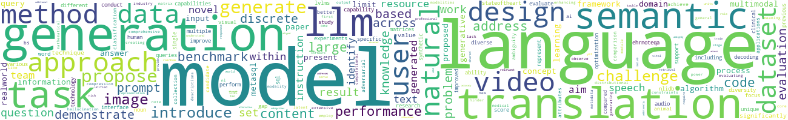

Hi Sam,
Your NLP recap is here!
Here are your must read papers from the past 7 days.
- Towards Decoding Brain Activity During Passive Listening of Speech
- UN-SAM: Universal Prompt-Free Segmentation for Generalized Nuclei Images
- Self-Supervised Speech Quality Estimation and Enhancement Using Only Clean Speech
- Automated Classification of Phonetic Segments in Child Speech Using Raw Ultrasound Imaging
The last 7 days have seen some interesting discussion in the NLP community.
Over this period, 5 topics thrived:
- Text Segmentation, with 25 articles.
- Multimodal Language Processing, with 16 articles.
- Semantic Analysis, with 14 articles.
- Language Modeling, with 14 articles.
- Information Extraction, with 13 articles.
Of your interests, the most active were:
- Language Modeling (14 articles)
- Information Extraction (13 articles)
- Text-to-Speech (TTS) (8 articles)
- Question Answering Systems (4 articles)
Happy reading!
NLPress